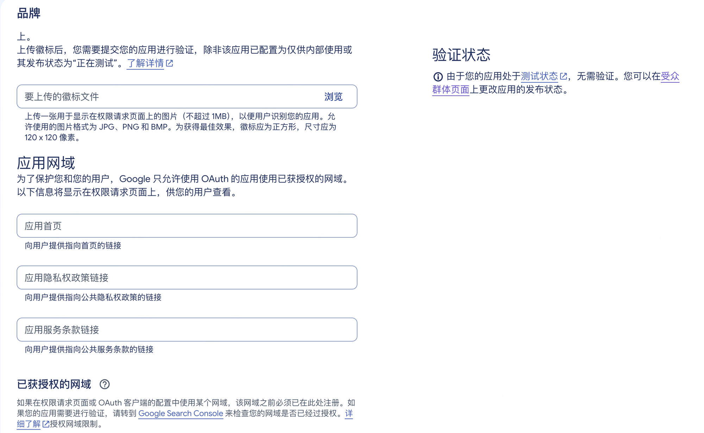
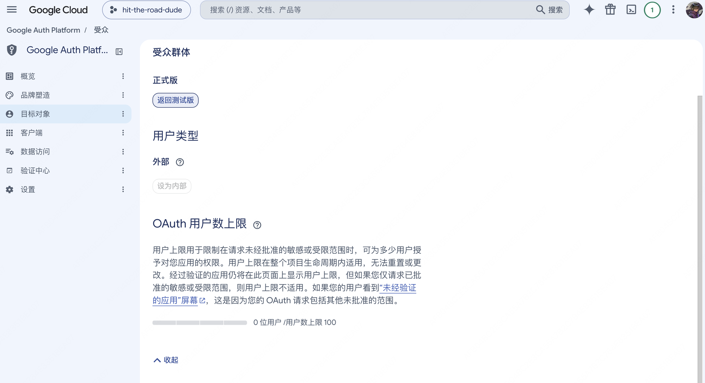
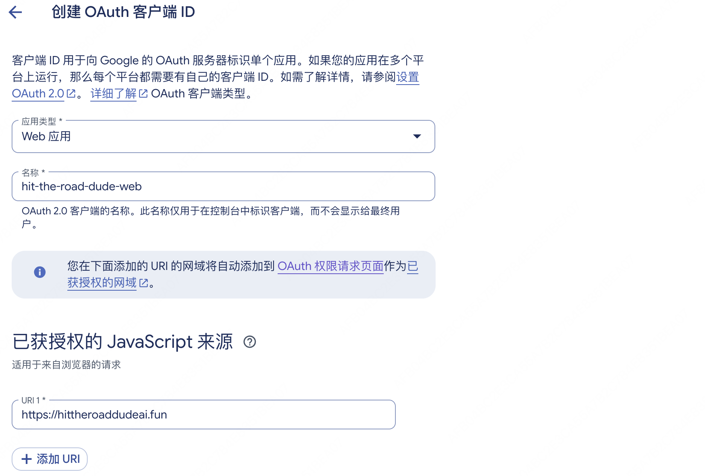
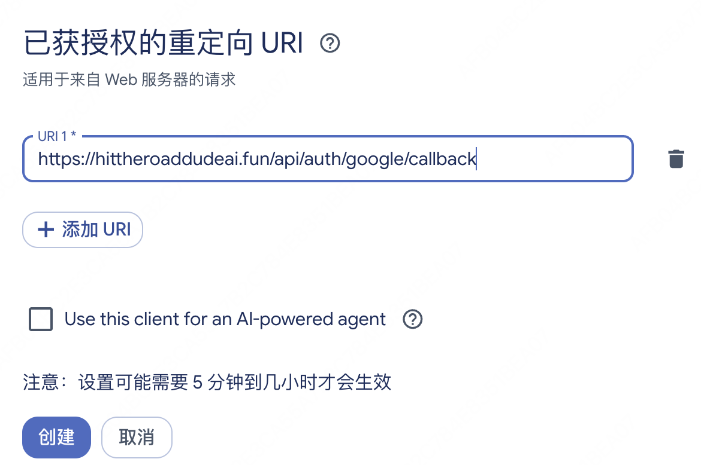

这套 Google Cloud 配置只有一个目的：让用户能在你的网站上用 Google 账号登录。 它不负责托管网站、不存你的业务数据、不收款，也不影响 SEO；它只做身份验证——用户点登录后由 Google 确认身份，再把邮箱、姓名和头像安全地交给你的站。
多站点矩阵遵循「一词一项目」原则：每个独立域名在 Google Cloud 新建一个独立项目（Project），不要在旧项目下只新建客户端。 因为 OAuth 同意屏幕（登录弹窗显示的网站名称、Logo、隐私政策与服务条款链接）是按项目级别绑定的，多个站点共用同一个项目会让用户在 B 站登录时看到 A 站的名字。
配置真正落地的产出只有两样：一对客户端凭据（Client ID 和 Client Secret），以及一个精确到路径的回调地址。 品牌页、受众类型、发布状态、授权网域这些设置，都是围绕这两样做安全边界——告诉用户「谁在请求登录」，也告诉 Google「只允许把授权码送回这个地址」。
为什么要把登录交给 Google
如果网站自己做密码登录，就要处理密码哈希存储、找回密码、发信验证码、撞库防护和泄露风险。用 Google 登录把这些全部外包：本站只信任 Google 签发的身份，账号以 Google 的用户唯一标识（sub）为准，同一邮箱若换绑了别的 Google 账号会被拒绝登录。代价是用户必须有 Google 账号，这对出海欧美用户不是障碍。
一次 Google 登录发生了什么
- 用户在本站勾选年龄与条款确认，点「使用 Google 登录」。
- 页面跳转到 Google 同意屏幕，用户选择账号并确认授权。
- Google 带着一次性授权码（
code）跳回登记过的回调地址（/api/auth/google/callback）。 - 服务端用
code+Client Secret+ PKCE 校验码向 Google 换取id_token，读取邮箱、姓名和头像。 - 站点按 Google
sub建号（首次赠送注册积分）或登录，种下会话 Cookie 并跳回/dashboard。
每个设置项的作用（以正式站为例）
下面这些值是按项目实际填写的。每上一个新站，新建一个 Google Cloud 项目，把项目名、应用名和域名替换成新站即可。
| 设置项 | 填写值（示例） | 为什么需要 |
|---|---|---|
| Google Cloud 项目 | hit-the-road-dude（一词一项目） | 隔离 OAuth 同意屏幕品牌、凭据、配额和日志 |
| 应用名称 & 支持邮箱 | Hit The Road Dude AI / 你的 Gmail | 用户登录弹窗上看到的「谁在请求登录」与联系邮箱 |
| 应用网域（3 个链接） | 首页、/privacy-policy、/terms-of-service | 必填前置项：不填这三项，「受众群体」页无法点击「发布应用」 |
| 授权网域 | hittheroaddudeai.fun | 声明 OAuth 允许使用的顶级域名（不带 https://） |
| 应用徽标（Logo） | 留空（先不上传） | 上传徽标会触发 Google 人工品牌审核；留空可免审立即使用 |
| 受众类型 & 发布状态 | 外部（External）+ 正式版（In production） | 测试版只有白名单邮箱能登；发布正式版后所有 Google 账号都能登 |
| 数据访问范围（Scopes） | openid email profile | 只拿基础身份信息，不碰敏感权限，无需提交安全审核 |
| 客户端类型 | Web 应用 | 由服务端完成授权码交换 |
| JavaScript 来源 | https://hittheroaddudeai.fun | 允许发起登录请求的网页源（末尾绝对不能带斜杠） |
| 重定向 URI | https://hittheroaddudeai.fun/api/auth/google/callback | Google 把授权码送回的精确地址（协议、路径、大小写完全一致） |
| Client ID | 270694665379-….apps.googleusercontent.com | 公开标识，写入 wrangler.jsonc 的 vars.GOOGLE_CLIENT_ID |
| Client Secret | GOCSPX-…（填入 .dev.vars 并同步远端） | 服务端换 token 的密钥，写入 .dev.vars 并用 wrangler secret put 同步 |
操作步骤：按严格先后顺序点完 4 步
顺序不能反：必须先在「品牌塑造」填完三个链接和授权网域并保存，再去「受众群体」点「发布应用」。 如果品牌页的链接留空，「发布应用」按钮会处于灰色禁用状态。
第一步：品牌塑造（填齐 3 个链接与授权网域，徽标留空）
新建项目后进入 Google Auth Platform → 品牌塑造（Branding）：填好应用名称、用户支持邮箱，然后在「应用网域」填入应用首页（https://<domain>）、隐私权政策链接（https://<domain>/privacy-policy）、服务条款链接（https://<domain>/terms-of-service），在「已获授权的网域」添加 <domain>，最后点底部「保存」。注意：「要上传的徽标文件」务必留空——只要不传徽标且只用基础权限，即使站点还没部署上线，填这三个链接也不会阻塞登录，更不会卡在人工审核。

图注：品牌页正确填法：徽标留空免审；应用首页、/privacy-policy、/terms-of-service 和已获授权的网域当场填齐并保存，保存后「发布应用」按钮才会解锁。
第二步：受众群体（切为「外部」并发布到「正式版」）
进入左侧 目标对象（Audience）：同意屏幕建好后默认是「测试」状态，只有手动添加的测试邮箱能登录。品牌页保存后，「发布应用」按钮已解锁，点击「发布应用」并在弹窗点「确认」，将发布状态切为正式版。

图注：发布状态为「正式版」，用户类型为「外部」。下方 0/100 的用户上限只对敏感或受限权限生效，本站只用基础权限，不受限制。
第三步：创建 Web 应用客户端（填 JS 来源）
进入左侧 客户端（Clients） → 创建客户端：应用类型选「Web 应用」，名称填 <site>-web（仅用于自己在控制台识别，不展示给用户）。「已获授权的 JavaScript 来源」点击添加 URI，填 https://<domain>，注意不要带路径和末尾斜杠。

图注：创建客户端时应用类型选 Web 应用，JavaScript 来源填 https://hittheroaddudeai.fun（无末尾斜杠）。
第四步：填重定向 URI，不要勾 AI Agent
「已获授权的重定向 URI」是整套配置里最容易出错的一项。它必须和代码里的回调地址逐字符一致：https://<domain>/api/auth/google/callback，不能有末尾斜杠。底部的「Use this client for an AI-powered agent」不要勾选，然后点「创建」。

图注：重定向 URI 填 https://<domain>/api/auth/google/callback，下方 AI-powered agent 保持不勾。
拿到凭据后写入项目的位置
| 项目 | 值（示例） | 写入位置与命令 |
|---|---|---|
| Client ID | 270694665379-t26k6i6ueo6dpjn3ipton4p04ot1njet.apps.googleusercontent.com | wrangler.jsonc 的 vars.GOOGLE_CLIENT_ID |
| Client Secret | GOCSPX-...（关闭弹窗后无法再次查看） | 本地写入 .dev.vars 的 GOOGLE_CLIENT_SECRET，线上执行 npx wrangler secret put GOOGLE_CLIENT_SECRET |
| 回调地址 | https://<domain>/api/auth/google/callback | Google 控制台与 src/server/google.ts 自动对齐 |
| 登录范围 | openid email profile | src/server/google.ts 内置 |
常见错误对照表
| 现象 | 原因 | 处理 |
|---|---|---|
| 受众页「发布应用」按钮是灰色的 | 品牌页的 3 个链接或已获授权网域还没保存 | 先去「品牌塑造」填好首页、/privacy-policy、/terms-of-service 和授权网域并保存 |
| redirect_uri_mismatch | 回调地址与代码不一致（多了斜杠或写错路径） | 逐字符核对 https://<domain>/api/auth/google/callback |
| 只有自己的号能登，别人登报 403 | 应用还在「测试」状态 | 在「目标对象」页面点「发布应用」切为正式版 |
| 登录后报 google_token_exchange_failed | Client ID 或 Secret 填错，或远端未上传 Secret | 核对 wrangler.jsonc 与 npx wrangler secret put GOOGLE_CLIENT_SECRET |
| 弹窗提示「Google 尚未验证此应用」 | 品牌页上传了徽标但尚未通过人工验证 | 在品牌页移除徽标，或等站点上线后提交品牌验证 |
| 本地开发点登录跳到了线上正式域名 | 本地读了正式 SITE_URL | 本地开发用登录页下方的「开发登录」即可 |